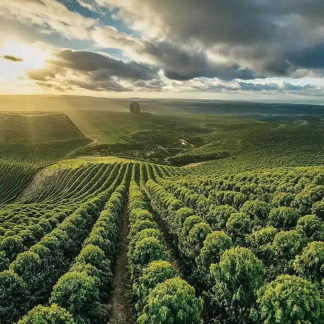
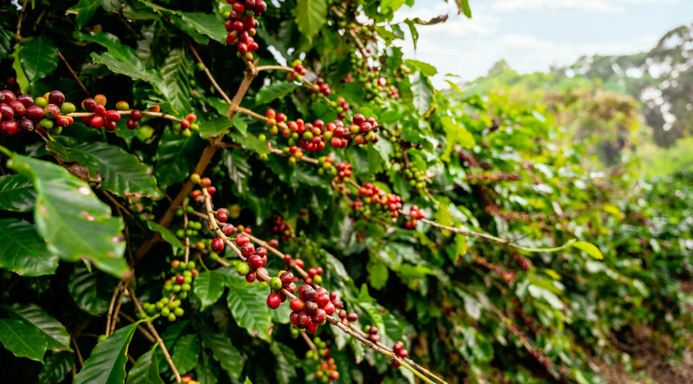
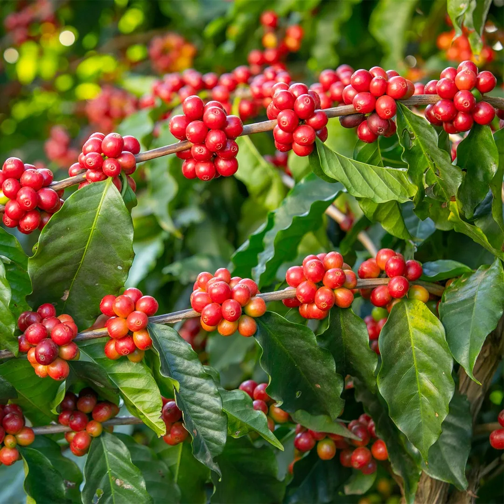

Tecnología Inteligente para la Producción Cafetera
Monitorea cultivos de café, registra plagas y optimiza tu producción mediante herramientas digitales avanzadas diseñadas para el campo.
Monitorea cultivos de café, registra plagas y optimiza tu producción mediante herramientas digitales avanzadas diseñadas para el campo.

Herramientas diseñadas específicamente para optimizar la gestión de tus cultivos de café
Administra tus plantaciones de café con registro completo de variedades, ubicaciones y ciclos de producción.
Registra y monitorea plagas y enfermedades en tiempo real para tomar acciones preventivas.
Controla aplicaciones de fertilizantes, optimiza recursos y mejora la nutrición de tus cultivos.
Registra producción, calidad del grano y optimiza tus procesos de recolección.
Almacena toda la información de tu finca en una plataforma segura y accesible desde cualquier lugar.
Visualiza estadísticas, tendencias y métricas de producción con dashboards interactivos.

CoffeeTech ayuda a los caficultores a transformar sus procesos tradicionales en operaciones modernas y eficientes mediante tecnología de punta.
Accede a datos en tiempo real sobre el estado de tus cultivos, clima y producción.
Controla variables críticas que impactan directamente en el sabor y aroma de tu café.
Optimiza recursos, reduce pérdidas y maximiza el rendimiento de tus plantaciones.
Implementa prácticas agrícolas responsables con el medio ambiente.
Impulsando la caficultura desde la formación y la innovación
Coffee+visión es un proyecto tecnológico nacido en el SENA, diseñado por aprendices apasionados por transformar el campo colombiano. Nuestra meta es cerrar la brecha digital en la agricultura, ofreciendo herramientas de visión artificial y análisis de datos que antes eran inalcanzables para el pequeño productor.
Desarrollado con el respaldo académico y técnico del Servicio Nacional de Aprendizaje.
Creamos soluciones reales para los desafíos diarios de las fincas cafeteras.

Únete a cientos de caficultores que ya están mejorando sus cultivos con CoffeeTech